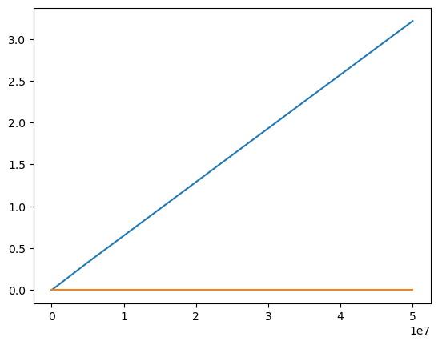

Code
# Якщо елемент не буде знайдено, виводиться -1
def linear_search(a_list, x):
i, length = 0, len(a_list)
while i < length and x != a_list[i]:
i += 1
return i if i < length else -1 # Якщо елемент не буде знайдено, виводиться -1
def linear_search(a_list, x):
i, length = 0, len(a_list)
while i < length and x != a_list[i]:
i += 1
return i if i < length else -1 search_item = int(input("Введіть шуканий елемент: "))Введіть шуканий елемент: 5a = [32, 1, 3, 4, 2, 1]
linear_search(a, search_item)-1Завдання на самостійну роботу: Оцінити асимптотичну складність алгоритму лінійного пошуку у \(О\)-нотації.
Складність O(n)
def bin_search(a_list, x, left, right):
if left > right or len(a_list) == 0:
return -1
middle = (left + right) // 2
if a_list[middle] == x:
return middle
elif (a_list[middle] < x):
return bin_search(a_list, x, middle + 1, right)
else: # a_list[middle] > x
return bin_search(a_list, x, left, middle - 1)a = range(7,21)search_item = int(input("Введіть шуканий елемент: "))Введіть шуканий елемент: 5bin_search(a, search_item, 0, len(a) - 1)-1Завдання на самостійну роботу:
Оцінити асимптотичну складність алгоритму бінарного пошуку пошуку у \(О\)-нотації.
Асимптотична складність O(log(n)).
написати функцію, яка б могла повертати датафрейм з наступним складом полів: (“n”, “time”), де n – розмір масиву для функції `linear_searh();
написати функцію, яка б могла повертати датафрейм з наступним складом полів: (“n”, “time”), де n – розмір масиву для функції `bin_searh();
за результатами попередніх завдань побудувати графіки залежності часу виконання процедури пошуку від розміру масиву. Приклад побудови графіків у середовищі Ipython можна подивитися тут.
оцінити, який з двох алгоритмів є більш ефективним та в якому діапазоні розміру задачі.
import pandas as pd
import numpy as np
from datetime import datetime
import random
from array import array
import time
Nlist=[0, 5, 50, 500, 5000, 50000, 500000, 5000000, 50000000]
Tlist=[0]
def linear_search(a_list, x):
i, length = 0, len(a_list)
while i < length and x != a_list[i]:
i += 1
return i if i < length else -1
i=0
I1 = []
for i in range(5):
I1.append(++i)
i=0
I2 = []
for i in range(50):
I2.append(++i)
i=0
I3 = []
for i in range(500):
I3.append(++i)
i=0
I4 = []
for i in range(5000):
I4.append(++i)
i=0
I5 = []
for i in range(50000):
I5.append(++i)
i=0
I6 = []
for i in range(500000):
I6.append(++i)
i=0
I7 = []
for i in range(5000000):
I7.append(++i)
i=0
I8 = []
for i in range(50000000):
I8.append(++i)
Tlist=[0]
start_time = time.time()
linear_search(I1, 5)
t=(time.time() - start_time)
Tlist.append(t)
start_time = time.time()
linear_search(I2, 50)
t=(time.time() - start_time)
Tlist.append(t)
start_time = time.time()
linear_search(I3, 500)
t=(time.time() - start_time)
Tlist.append(t)
start_time = time.time()
linear_search(I4, 5000)
t=(time.time() - start_time)
Tlist.append(t)
start_time = time.time()
linear_search(I5, 50000)
t=(time.time() - start_time)
Tlist.append(t)
start_time = time.time()
linear_search(I6, 500000)
t=(time.time() - start_time)
Tlist.append(t)
start_time = time.time()
linear_search(I7, 5000000)
t=(time.time() - start_time)
Tlist.append(t)
start_time = time.time()
linear_search(I8, 50000000)
t=(time.time() - start_time)
Tlist.append(t)
info={
'num': Nlist,
'time': Tlist
}
dt=pd.DataFrame(data=info)
dt| num | time | |
|---|---|---|
| 0 | 0 | 0.000000 |
| 1 | 5 | 0.000000 |
| 2 | 50 | 0.000000 |
| 3 | 500 | 0.000000 |
| 4 | 5000 | 0.001000 |
| 5 | 50000 | 0.003000 |
| 6 | 500000 | 0.031348 |
| 7 | 5000000 | 0.329415 |
| 8 | 50000000 | 3.213452 |
n – розмір масиву для функції `bin_searh()import pandas as pd
import numpy as np
from datetime import datetime
import random
from array import array
import time
def bin_search(a_list, x, left, right):
if left > right or len(a_list) == 0:
return -1
middle = (left + right) // 2
if a_list[middle] == x:
return middle
elif (a_list[middle] < x):
return bin_search(a_list, x, middle + 1, right)
else: # a_list[middle] > x
return bin_search(a_list, x, left, middle - 1)
i=0
B1 = []
for i in range(5):
B1.append(++i)
i=0
B2 = []
for i in range(50):
B2.append(++i)
i=0
B3 = []
for i in range(500):
B3.append(++i)
i=0
B4 = []
for i in range(5000):
B4.append(++i)
i=0
B5 = []
for i in range(50000):
B5.append(++i)
i=0
B6 = []
for i in range(500000):
B6.append(++i)
i=0
B7 = []
for i in range(5000000):
B7.append(++i)
i=0
B8 = []
for i in range(50000000):
B8.append(++i)T2list=[0]
start_time = time.time()
bin_search(B1, 5, 0, len(I1) - 1)
t=(time.time() - start_time)
T2list.append(t)
start_time = time.time()
bin_search(B1, 50, 0, len(I1) - 1)
t=(time.time() - start_time)
T2list.append(t)
start_time = time.time()
bin_search(B3, 500, 0, len(I1) - 1)
t=(time.time() - start_time)
T2list.append(t)
start_time = time.time()
bin_search(B4, 5000, 0, len(I1) - 1)
t=(time.time() - start_time)
T2list.append(t)
start_time = time.time()
bin_search(B5, 50000, 0, len(I1) - 1)
t=(time.time() - start_time)
T2list.append(t)
start_time = time.time()
bin_search(B6, 500000, 0, len(I1) - 1)
t=(time.time() - start_time)
T2list.append(t)
start_time = time.time()
bin_search(B7, 5000000, 0, len(I1) - 1)
t=(time.time() - start_time)
T2list.append(t)
start_time = time.time()
bin_search(B8, 50000000, 0, len(I1) - 1)
t=(time.time() - start_time)
T2list.append(t)
info2={
'num': Nlist,
'time': T2list
}
dt2=pd.DataFrame(data=info2)
dt2| num | time | |
|---|---|---|
| 0 | 0 | 0.0 |
| 1 | 5 | 0.0 |
| 2 | 50 | 0.0 |
| 3 | 500 | 0.0 |
| 4 | 5000 | 0.0 |
| 5 | 50000 | 0.0 |
| 6 | 500000 | 0.0 |
| 7 | 5000000 | 0.0 |
| 8 | 50000000 | 0.0 |
import matplotlib.pyplot as plt
%matplotlib inline
plt.plot(Nlist, Tlist, Nlist, T2list)

Алгорит бінарного пошуку є більш ефективним і його складність зростає набагато повільніше (через велику швидкість пошуку навіть в великий списках, на діаграмі це виглядає як пряма, хоча насправді це графік log(n)).
Дати визначення складності задачі з символом \(\Omega\).
Це задача, що відображає нижню асимптотичну межу.
Функція часової складності має вигляд: \(F(N)=N^3+7N^2-14N\). Як записати аисмптотичну складність в нотації \(O()\)?
O(n^3).
Функція часової складності має вигляд: \(F(N)=1.01^N+N^{10}\). Як записати аисмптотичну складність в нотації \(O()\)?
O(1.01^N)
Функція часової складності має вигляд: \(F(N)=N^{1.3}+10log_2N\). Як записати аисмптотичну складність в нотації \(O()\)?
O(N^1.3)
У чому полягає ідея розпаралелювання обчислень і для чого вона використовується? Які з алгоритмів, наведених у цій лабораторній роботі, дозволяють розпаралелювання?
Вона використовується в рекурсивних алгоритмах для поділу задачі для простішого розв’язання. Це дозволяються усі алгоритми які використовують рекурсію (факторіал з рекурсією, числа Фібоначчі, сортування злиттям).
Які існують шляхи підвищення обчислювальної швидкості алгоритмів? Який з них є найбільш ефективним?
Оптимізація алгоритму та використання більш ефективного алгоритму. Перший шлях вплине на константу і він є менш ефективним, другий шлях можи давати набагато більш ефективні результати.